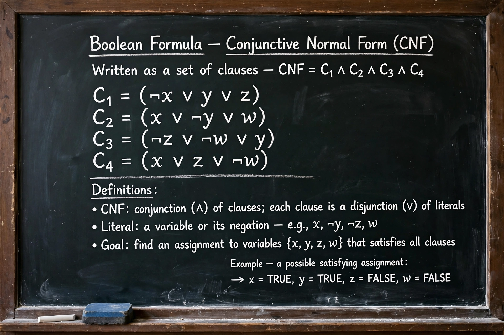

Boolean satisfiability problem

The Boolean satisfiability problem (abbreviated SATISFIABILITY, or more commonly SAT) is the problem of determining whether there exists an assignment of truth values to the variables of a given Boolean formula that makes the formula evaluate to true. SAT was the first problem shown to be NP-complete, in the Cook–Levin theorem proved by Stephen Cook in 1971 and independently by Leonid Levin. Despite its worst-case difficulty, modern SAT solvers routinely solve industrial instances with millions of variables.
| Problem | Given a Boolean formula, decide whether it has a satisfying assignment |
|---|---|
| Complexity | NP-complete |
| Standard form | Conjunctive normal form (CNF) |
| Key special cases | 2-SAT (polynomial time); 3-SAT (NP-complete) |
Definitions
A formula is usually given in conjunctive normal form: a conjunction of clauses, each clause being a disjunction of literals (variables or their negations). The special case in which each clause contains at most three literals is called 3-SAT and remains NP-complete, whereas 2-SAT can be solved in polynomial time. MAX-SAT asks instead for an assignment satisfying as many clauses as possible and is a standard target of approximation algorithms.
SAT solvers
The classical algorithm is DPLL (Davis–Putnam–Logemann–Loveland), based on backtracking search with unit propagation. Modern conflict-driven clause learning (CDCL) solvers, introduced in the late 1990s, add clause learning, efficient watched-literal data structures, and randomised restarts, and they underpin applications in hardware and software verification, planning, and cryptanalysis-adjacent testing problems. Annual SAT competitions have driven steady improvements in solver performance.
Significance
Because every problem in NP can be reduced to SAT in polynomial time, SAT is the canonical NP-complete problem; Richard Karp used it as the starting point to show 21 further problems NP-complete in 1972. If P ≠ NP, no polynomial-time algorithm for SAT exists, though average-case and industrial instances are often tractable in practice.